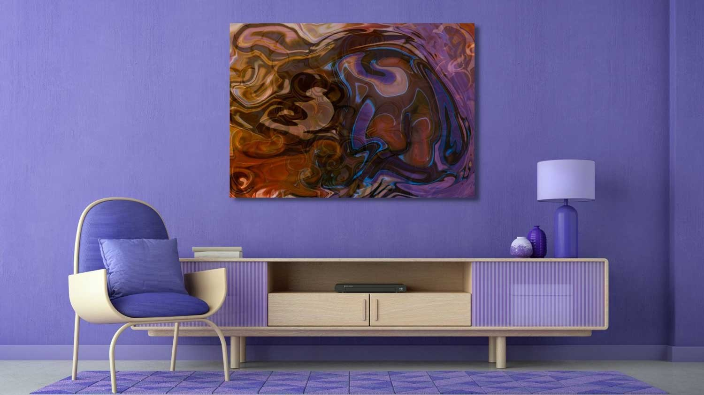
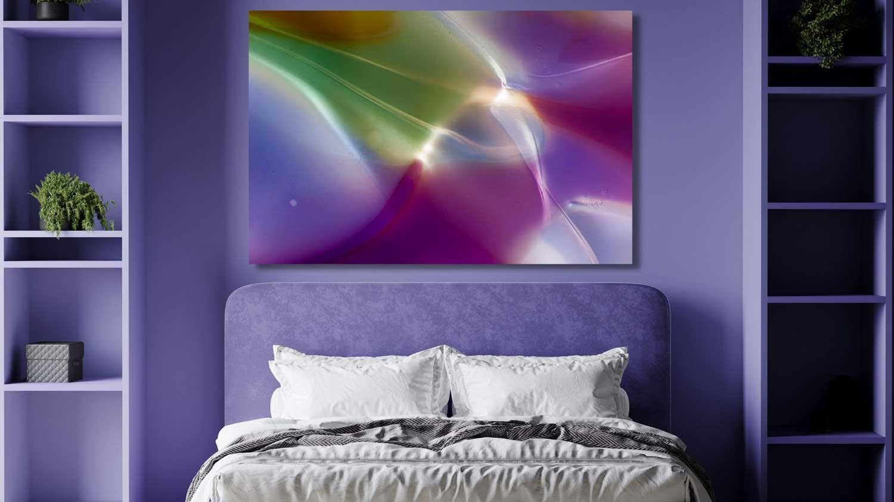
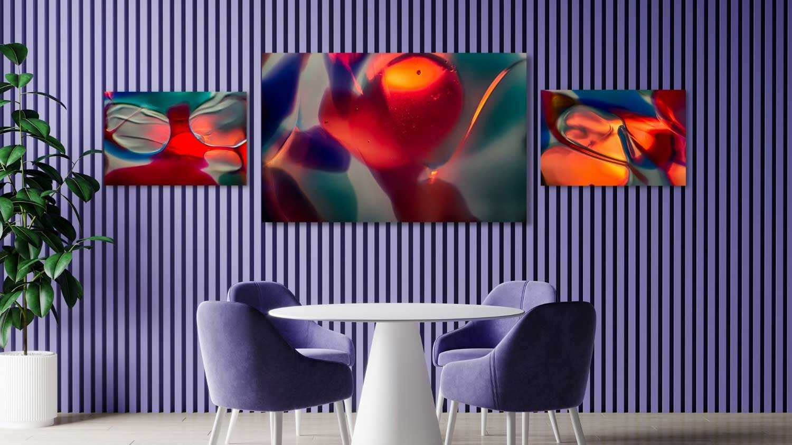
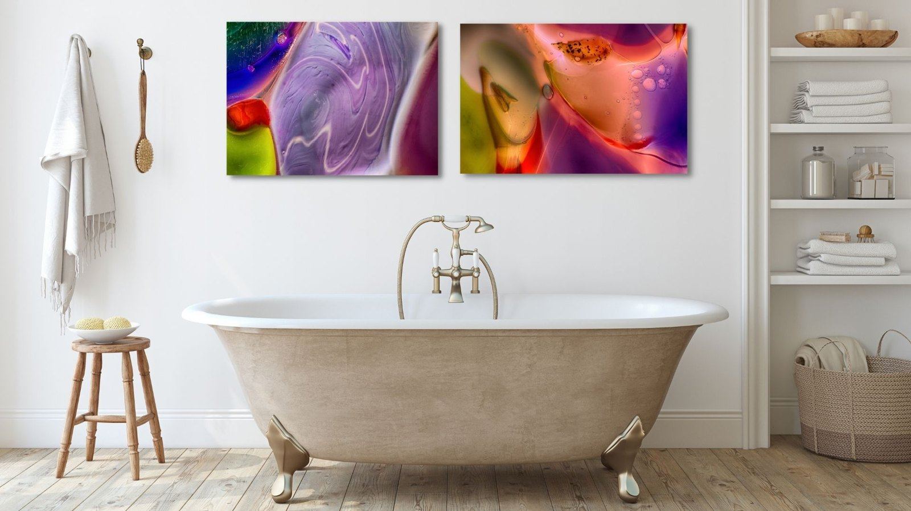

The Library · Omaste Witkowski
Wall Art Essentials For Pantone Color of The Year 2022

By now many people know that the Pantone color of the year for 2022 is Very Peri (Pantone 17-3938). It has been described as a “dynamic periwinkle blue hue with a vivifying violet red undertone”. This special color brings with it happiness and warmth and is the first brand new shade to be named color of the year by Pantone.
Interior designers and decorators have the pleasure of working with this color in wall art, homewares and accessories. The color purple is historically a “royal” color for kings and queens and now we get to bring this richness into home, office and rental designs with vibrant feature walls, soft furnishings, art and wall art.
What many people don’t know is how to find the best wall art to pair with this color in order to produce unique and creative interior design and decor solutions.
Pairing art with interior design seems like it would be pretty easy to do but in fact it can be somewhat overwhelming for many people. There are literally hundreds of thousands of options online at any given time. Not to mention the additional options via art gallery, home decor stores and private seller/artists.
Having too many options can often times make it difficult to make a decision. Especially when you are choosing art that will either make or break your design. If you are the homeowner, renter or occupant of the space, it’s a choice you will get to look at day in and day out.
So How Do You Choose The Perfect Art For Your Interior Designs and Very Peri?
We are so glad you “hypothetically” asked! Very Peri is a versatile color and will work within a few different palettes so it is up to you to be creative with your art choices. That having been said, there are a few things to consider when you look at art for your rooms.
Here’s How To Coordinate Your Wall Art, The Pantone Color of The Year 2022 “Very Peri” and Your Interior Design and Decor Solutions In Any Room in Your Home, Office or Rental Property!
1. Mood: Think about what mood you want in the room. What activities will be done there and is there already a view? Livings rooms are better for vibrant, slightly more risky pieces. Bedrooms are good for more abstract art. Leaving art unframed can work well in the bedroom because it keeps the focus on the art, and makes the room feel less formal. Bathrooms are generally good for simple, geometric styles.
2. Existing Palette: Consider the colors, textures, and eras that already exist in your room or design? On the other hand, don’t be narrow-minded about art that contrasts, rather than complements, your existing design scheme. Sometimes art that’s too matchy-matchy can get lost in the room.
3. Space Planning: Are you designing the room around a large art piece, using more than one piece of art or just adding a small artwork as an accent? You can group several smaller paintings together, for instance, or align the top edges of a group of works for a visually interesting arrangement of slightly differently-sized art. It’s a good idea to leave room in your plan for inspiration. Maybe you decided on a single large statement piece for your bedroom, but you stumble upon three perfect prints you can’t live without.
4. Visual Style: In general, what style(s) do you enjoy most? You might find yourself drawn to abstract, landscape or line art at different times. Look at various works and notice what makes you light up, get excited or relaxes you. Remember that your taste is unique. Whatever works for you, works for you! And don’t be afraid to mix and match styles! Your art collection can help tell your specific story throughout your home in a really beautiful way.
5. Interests: What do you value and are you working towards a goal. Art is a great way to motivate, inspire and remind yourself of what you value in life. Maybe you remember or dream about a special vacation, or destination. If you imagine a future full of trees, nature, and creativity, these interests can inspire the kinds of art you choose.
Very Peri Art For Interior Designs
This color was created specifically to reflect the transition that is taking place in our world right now. It was created to bring creativity, innovation and cheer to your interior designs, home decor and office spaces. You can find this special color in nature as well as in abstract art. It’s a wonderful bridge between what is real, what is imagined and what is possible.
Creating art with Very Peri is quite easy because it is everywhere. Purple is a cross between red and blue so you can creatively create color palettes that have shades of these colors along with the more muted browns, tans and understated elegant shades. Yellow also pairs well here in the right shades as you can see in the palette below.
Choosing the best art for your interior designs can be one of the most enjoyable parts of the project, especially with this fun color. From subtle dashes of color to bold, bright and beautiful pieces, there are many ways to bring Very Peri into any project, any room or any design.
Keep scrolling to see examples of Very Peri inspired art in every room or click the bright red button to see the art in our online gallery along with other selections of Home Decor and print options.
Living Room Designs
Very Peri art in the living room will spark lively, creative conversations that invite people to relax and be engaged at the same time. The soothing tones of blue make you feel comfortable and all the other colors you can mix with it balance and complement this and the faint energy of red that is fun and exciting.
Living rooms are the core space in a home. They are that one common square where all the other squares of the house overlap and people come together. Whatever be the style of your living room and if it’s formal, informal or semi-formal, its purpose is usually to socialize, get together and interact. Therefore it’s the one space in the home that deserves a generous dose of art.
The size, style and colors of your art are usually determined by the overall interior design style that you choose. In this example we have chosen a mix of nature, abstract, motivational, energy and mixed media artwork for the walls. Some of it is framed and some are just canvas prints.
Office and Home Office Designs

Creativity and innovation thrive in the Very Peri environment. Warmth and excitement balance against cool colors and elegant shades to create an overall atmosphere where you can enjoy your spaces. This color helps to bring a sense of calm to your day as well as inspire you to do your best.
You may have noticed that office spaces have changed dramatically in the last couple of years. From working in an office, to working part time at home and part time in the office to working full time from home. And any mix of these options. It’s been a wild ride and one many interior designers and decorators have been doing their best to keep up with when it comes to recent projects.
People need to be inspired no matter what their work environment is and where they are working from. Many designers are leaning into the role that art can plan in successful work designs. In fact, a recent study conducted by Affordable Art Fair and YouGov, 30% of employees in Britain said that having art in the workplace is the key to improving productivity and helping to stimulate creative discussions, brainstorming sessions and problem-solving.
Bedroom Designs

Inject personality and a dynamic vibe by bringing Very Peri into the bedroom. This fun color is also very blue and soothing underneath it’s warm exterior. You can enjoy different shades of pink along with green if you find the perfect sunset or sunrise photo in nature. Abstract prints can also be quite soothing and enjoyable in the bedroom.
As a truly versatile shade, and thanks to its blue base, Very Peri is good at instilling a sense of tranquillity and comfort into a space which makes it perfect for a soothing, sleepy place to relax and sleep well in.
Dining Rom Designs

Fun, uplifting and cheerful prints work well in the kitchen and dining room. With a shade like Very Peri, it is the perfect opportunity to be adventurous with the color of your art, home decor and furnishings.
Pantone describes Very Peri as encouraging ‘courageous creativity and imaginative expressions’ which means that you should not be afraid to go bold as the possibilities are endless. The dining room is a great place to enjoy this type of art that is uplifting and cheerful. Bold colors are fun to enjoy along with colorful means and conversations.
Kitchen Designs

Fun, uplifting and cheerful prints work well in the kitchen and dining room and Very Peri is just the color to pair them with. You can enjoy this in the wall art or in the colors throughout the room.
The kitchen is a fun place to enjoy photography, abstracts and line art. Many people put art above the cabinets or tables and create a focal point to enjoy. You can be bold and graphic with this art, and many people will choose abstracts for this reason. Kitchen art also tends to be small and impactful unless it’s installed on a large wall all by itself as a statement piece. Many people will also hang more than one smaller piece of art or photography here.
Bathroom Designs

Soothing prints that let you relax and unwind are a great choice for the bathroom. Soft shades of Very Peri do quite well in the bathroom and help to create a warm atmosphere no matter what the interior design style.
We hope you’ve enjoyed our top tips!
Show us how you use Very Peri in your home, office or rental this year by tagging us [@omastewitkowski](https://instagram.com/omastewitkowski) on Instagram…
Find your own piece with the art adventure · Ask the gallery what fits your wall